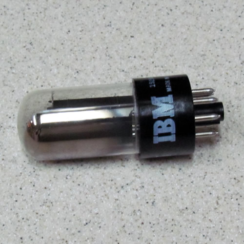
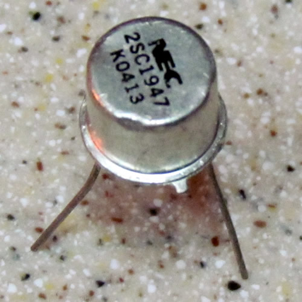
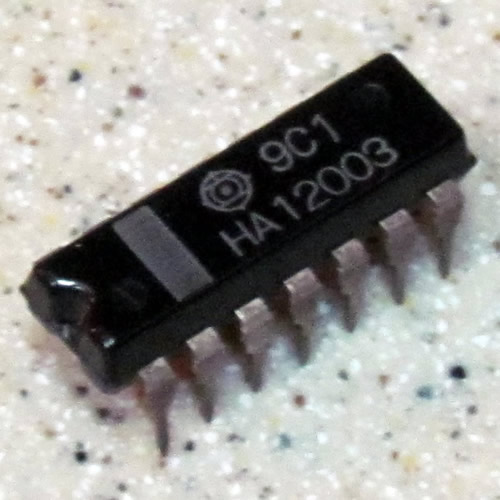
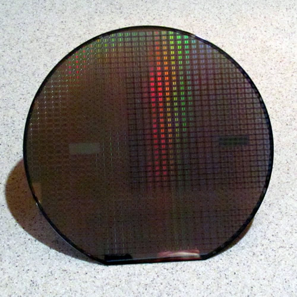

|  |
Vacuum Tube
Vacuum Tube
1943 Colossus
1946 Eniac
1952 IBM 701
Vacuum tubes represent binary code in the flow of electricity. It was either on or off depicting 1 or 0. Vacuum tube computers stored data on large magnetic drums and the vacuum tubes performed the calculations. Only one problem could be calculated at a time with these early computers.
| 1943 | Colossus |
| 1946 | Eniac |
| 1952 | IBM 701 |
|
Vacuum tubes represent binary code in the flow of electricity. It was either on or off depicting 1 or 0. Vacuum tube computers stored data on large magnetic drums and the vacuum tubes performed the calculations. Only one problem could be calculated at a time with these early computers.
|
|  |
Transistors
| 1954 | TRADIC |
| 1957 | Univac |
| 1961 | MANIAC |
|
Like the vacuum tube, the transistor is eventually a switch controlling the flow of electricity, but much smaller and more reliable than the vacuum tube. Many more transistors could be placed in a computer in a fraction of the space and cost previously required making computers more affordable and powerful.
|
|  |
Integrated Circuite
| 1966 | HP 2116A |
| 1971 | Illiac IV |
| 1972 | TV Typewriter |
|
The integrated circuit is a collection of tiny transistors onto a single chip. The small chip could contain more transistors than the previously larger transistor board making computers more powerful. The development of the integrated circuit was funded by NASA in order get a guidance computer small enough to fit on the Apollo Lunar Orbiter and Lander.
|
|  |
Microprocessor
| 1975 | Altair 8800 |
| 1977 | Apple II |
| 1992 | Commodore 64 |
|
A microprocessor, or processor, is an integrated circuit with additional functions included on the chip making it an entire programmable computer that can take input, process it, and generate an output.
|